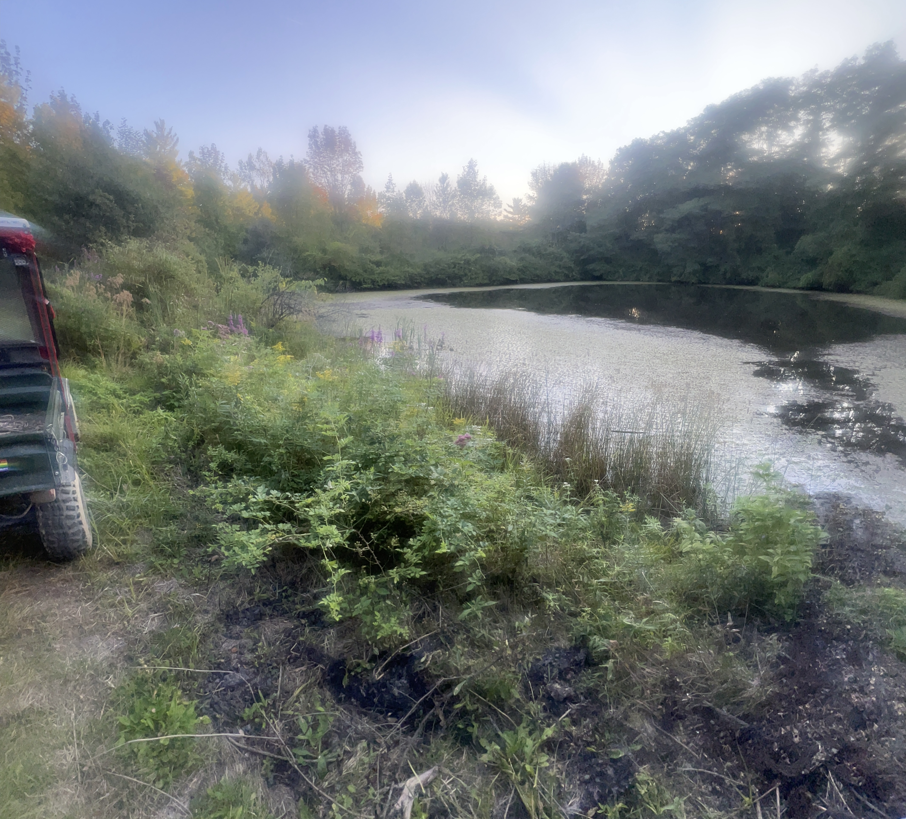

Current Foliage Status
Tree Species & Color Change Timeline
Different native species change color at different times. Here's when to expect color from key trees in our collection:
Early September - Early October
Mid-October (Peak Season)
Late October - November
The Loop
The Loop starts at the house and leads to the big pond, where you can turn around and return, or continue into the forest. The trail enters the forest like a gate from a meadow, walks along a high ridgeline, and circles back through brambly forest to the power lines.
Option 1: Walk to the pond and return (shorter route)
Option 2: Complete the full loop through the ridgeline and forest
Photography & Viewing Tips
Capture the Best Colors
- Timing matters: Visit on clear, sunny days for the most vibrant colors. Overcast days can mute the display.
- Backlighting: Position yourself with the sun behind the trees to see the colors glow with transmitted light.
- Golden hours: Early morning and late afternoon provide the warmest light for photography.
- Weather: Slight wind can help showcase foliage movement while still maintaining good viewing conditions.
What to Bring
- Comfortable walking shoes for trail exploration
- Camera or smartphone for capturing the beauty
- Layered clothing (mornings can be cool, afternoons warmer)
- Water and snacks for the trails
- Field guide to trees (optional, to identify species)
The Science of Foliage
Fall color is nature's finale—a brief but brilliant display caused by the changing seasons. Here's what happens:
How Trees Change Color
As days shorten and temperatures drop, trees sense it's time to prepare for winter. They begin to shut down food production in their leaves. This triggers a dramatic chemical shift:
- Chlorophyll breaks down: The green pigment that powers photosynthesis disappears, revealing colors hidden beneath.
- Yellow and orange appear: Carotenoid pigments become visible, creating bright yellows and oranges in species like birches and aspens.
- Reds develop: Anthocyanin pigments form in some species (maples, dogwoods) when sunny days and cold nights occur together.
- Browns emerge: Tannins create russet and bronze tones in oaks and other species.
Why Timing Varies
Different species respond to seasonal cues at different times and rates. Ash trees may start changing color in early September, while some oak species hold their color well into November. Temperature, moisture, and sunlight all influence the exact timing and intensity of the display each year.
Plan Your Fall Visit
Experience the Joan Vermeulen Arboretum's spectacular fall foliage display. Our 1.5 miles of trails provide diverse viewing opportunities through native and heritage tree collections.